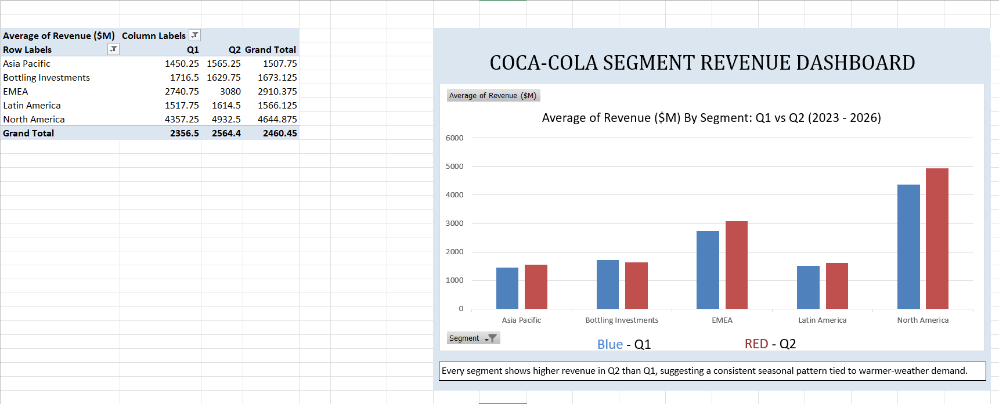

Tools: Excel (PivotTables) · Power BI (interactive dashboard)
Data: Coca-Cola quarterly segment revenue, Q1 2023–Q2 2026, sourced from SEC filings and Coca-Cola's Q2 2026 earnings release.
Swipe or use the arrows below to move through the full analysis →
THE QUESTION
What I set out to answer
Which segments are the largest, and which are growing fastest?
Is there a seasonal pattern in Coca-Cola's revenue?
How has overall performance changed from 2023 to 2026?
APPROACH
How I got there
Compiled 14 quarters of segment-level revenue into a tidy dataset
Built an Excel PivotTable comparing average Q1 vs. Q2 revenue by segment, keeping the comparison fair across partial and full years
Built an interactive Power BI dashboard: full 14-quarter trend line, 2026 snapshot, segment filter, and a headline growth metric
KEY FINDING 1
North America and EMEA lead the pack
Both segments have grown consistently since 2023, while Asia Pacific, Latin America, and Bottling Investments have stayed comparatively flat over the same period.
KEY FINDING 2
Revenue is seasonal — and consistently so
Every segment showed higher revenue in Q2 (Apr–Jun) than Q1, across all four years measured. That consistency across every region and year suggests a structural, predictable pattern — likely warmer-weather demand — rather than a one-off.
KEY FINDING 3
Revenue is up ~13% since 2023
Comparing the same six-month window (H1) year over year avoids skewing the numbers with partial-year data, and shows steady, moderate growth from H1 2023 to H1 2026.
EXCEL
Q1 vs. Q2 seasonality analysis

PivotTable + chart, Q1 vs. Q2 average revenue by segment (2023–2026)
Given how consistent the Q2 seasonal uplift is, regional teams could plan inventory, marketing spend, and bottling capacity around this predictable demand curve rather than treating it as unexpected each year.
Separately, since Bottling Investments and Asia Pacific have grown more slowly than North America and EMEA, it may be worth investigating whether that reflects strategic deprioritization (e.g. refranchising) or an under-served growth opportunity.
NOTES ON THE DATA
Caveats worth knowing
2025 and 2026 figures reflect Q1–Q2 only (H1). All comparisons involving these years use like-for-like periods (H1 vs. H1), not full years vs. partial years.
"Corporate" and "Eliminations" reporting lines were excluded, as they're accounting adjustments rather than operating segments.